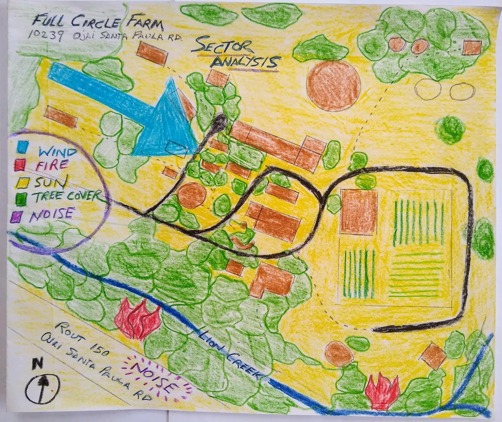
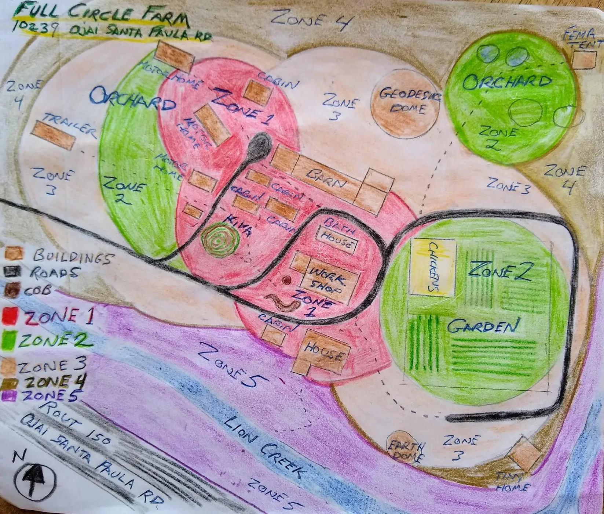

The proposal preserves the mature site, repairs broken relationships and adds new elements only where they can perform several functions.
The final whole-system design

Sectors Sun, fire, wind, road noise, wildlife and water arrive from different directions.

Zones Daily activity radiates from kitchens, bathrooms, gardens and work areas.Microclimates Shade, slope, vegetation and irrigation create distinct growing conditions.
Water first
The design begins by connecting tanks, roofs, greywater, soil and perennial vegetation. Water is the organizing layer because every garden, habitat and human use depends upon it.
Strengthen the center
Zone 1 deserves attention before distant expansion. Better pathways, storage, compost sorting, shade and irrigation make everyday work easier and therefore more likely to continue.
Use succession
Large invasive or hazardous trees should not disappear in a single operation. Remove them in stages while establishing oak, sycamore, bamboo screens, fruit and support species that will inherit their functions.
Protect the wild edge
Lion Creek remains the least intensively managed area. Selective clearing can maintain safe flow and access, but the corridor’s primary role is ecological.
A five-year sequence
Small steps that build capacity
Year 1
Repair and clear
Compost bays, pond work, invasive removal, community-room structure and mobile animal systems.
Year 2
Connect systems
Solar power, greywater branches, garden redesign, new shade trees and expanded animal integration.
Year 3
Capture water
Distributed rainwater systems, expanded learning garden, more habitat and a stronger governance model.
Year 4
Open the landscape
Lion Creek trail, restored ponds, garden gathering place and improved Persimmon Hill access.
Year 5
Share outward
Repair café, time bank, public events, shared work space and sister projects.
“Use small and slow solutions.”
The final plan is a direction, not a command. Observation continues after implementation begins.